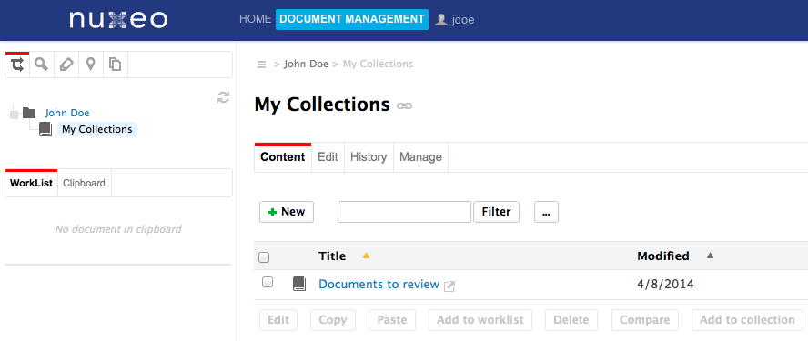
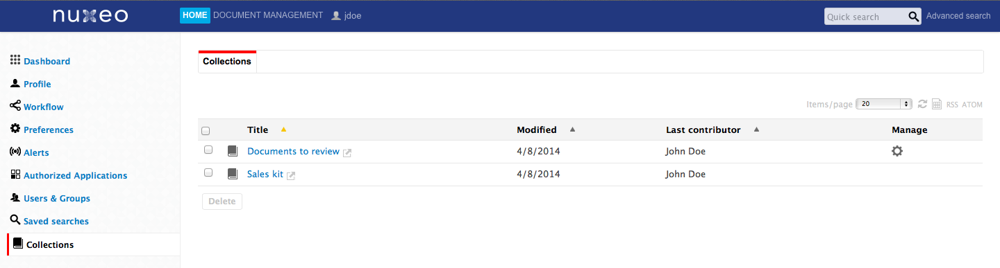
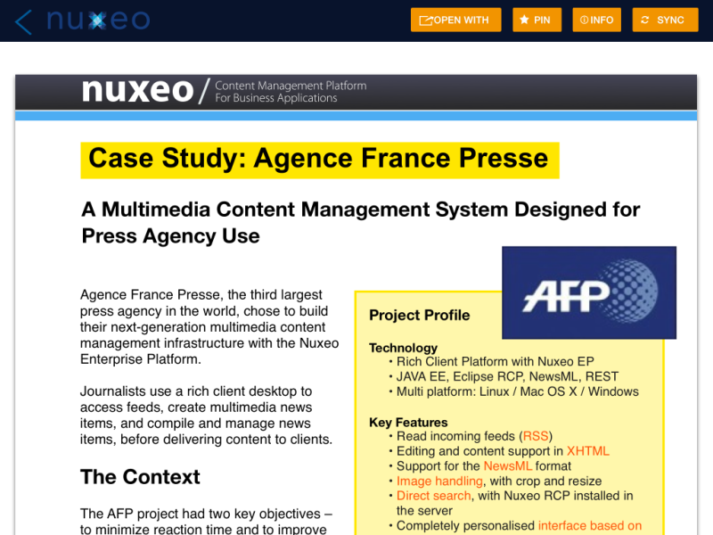
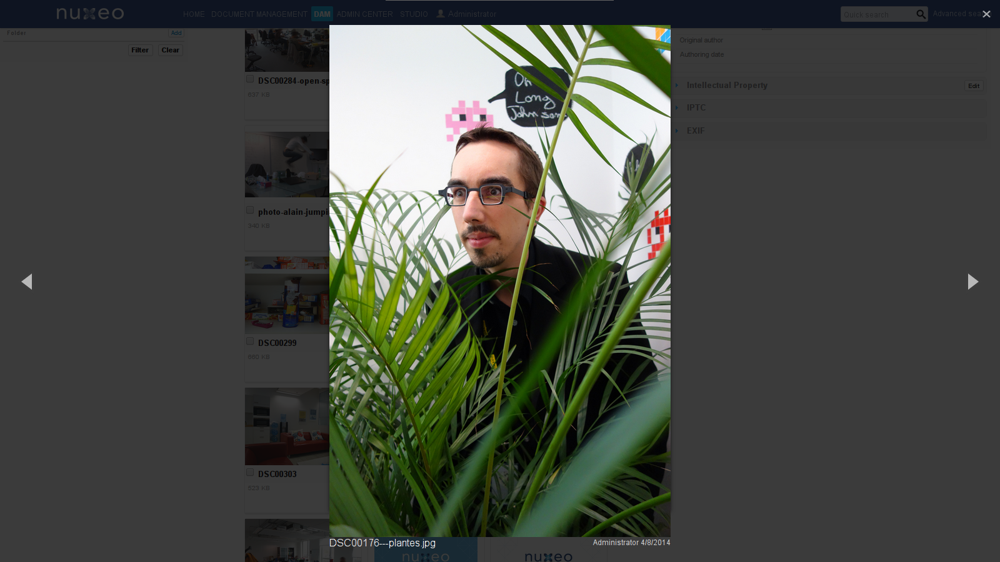
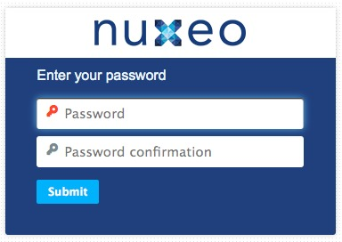
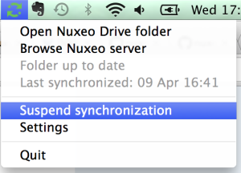

For Users
Assets, Cases and Documents Collections
Collections are a folder-like document in which you can classify existing documents. Documents are not actually copied or moved into the collection, which only holds a link to the document in its original location.

Collections are persisted, per user, sharable and are a great to provide bulk features such as:
- Bulk validation
- Bulk publishing
- Bulk download
- ZIP export
- PDF export


Collections are a natural way of working among thousands of assets and documents.
Nuxeo Drive iOS Edition
An iOS app, that can be installed on iPad (for now) and that allows the user to browse online or to take on the road the documents that belong to folders that have been selected by the user for Drive synchronisation. Typical use case is sales kit synchronisation for offline access. The application is read only, it doesn't allow to edit the documents.


Full Screen Mode
You can now navigate through a document list in full screen mode.

User Invitation
To enforce the security around user creation process, the default mode is now to invite users via email, and user is created in the system only when she fills complementary information, including her password. That way, password do not have to be transferred via email or parallel channels.


Nuxeo Drive
The Nuxeo Drive folder can be configured. Currently it is:
- Under OS X and Linux in the user home: ~
- Under Windows: in ~/Documents (Windows 7) or ~/My Documents (XP)
You can now choose its location during installation.
We also added the possibility to suspend/resume the synchronization.

And Nuxeo Drive is now available on the installation wizard of the Nuxeo Platform.
UI/UX
We change the way we display tooltips by using the jQuery library tipsy.